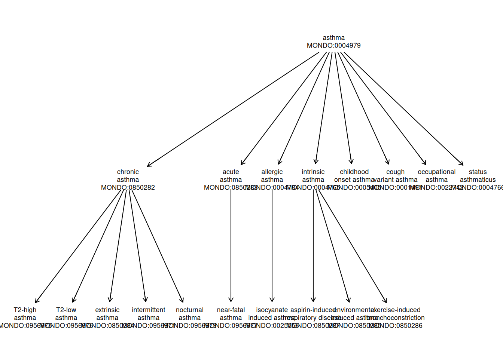
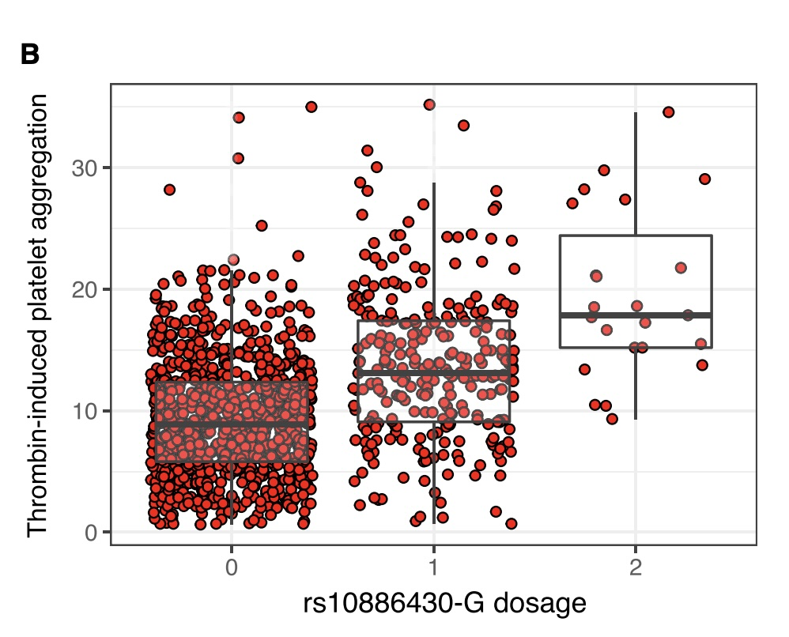

try(BiocManager::install("vjcitn/ontoProc2"))
## RSQLite (3.53.1 -> 3.53.2) [CRAN]
## ── R CMD build ──────────────────────────────────────────────────────────────
## * checking for file ‘/tmp/RtmpUZnjO8/remotes16e678c7ac4/vjcitn-ontoProc2-322f270/DESCRIPTION’ ... OK
## * preparing ‘ontoProc2’:
## * checking DESCRIPTION meta-information ... OK
## * checking for LF line-endings in source and make files and shell scripts
## * checking for empty or unneeded directories
## Removed empty directory ‘ontoProc2/.github’
## Removed empty directory ‘ontoProc2/docs’
## * looking to see if a ‘data/datalist’ file should be added
## * building ‘ontoProc2_0.99.14.tar.gz’
library(ontoProc2)
mondo = semsql_connect(ontology="mondo") # download on first attempt
report(mondo)
##
## ============================================================
## SemsqlConn Object
## ============================================================
##
## Connection Details:
## ----------------------------------------
## Database path: /root/.cache/R/BiocFileCache/16e4034a73c_mondo.db
## Ontology prefix: MONDO
## Status: ✓ Connected
##
## Database Statistics:
## ----------------------------------------
## Labeled terms: 59,064
## Direct edges: 109,103
## Entailed edges: 5,003,896
## Definitions: 22,594
##
## Terms by Prefix (top 5):
## ----------------------------------------
## MONDO: 31,886
## UBERON: 5,359
## HGNC: 5,023
## HP: 4,837
## GO: 4,072
##
## Key Tables Available:
## ----------------------------------------
## ✓ rdfs_label_statement
## ✓ has_text_definition_statement
## ✓ edge
## ✓ entailed_edge
## ✓ rdfs_subclass_of_statement
## ✓ owl_some_values_from
## ✓ has_oio_synonym_statement
##
## ============================================================
## Use methods like search_labels(), get_ancestors(), etc.
## Run ?SemsqlConn for documentation.
## ============================================================1 Introduction to GWAS
This chapter introduces genome-wide association studies (GWAS), covering the conceptual foundations and practical tools needed to design, execute, and interpret large-scale genetic association analyses.
1.1 Phenotype Vocabulary
At the boundaries of knowledge, it is important to establish conventions to support clear communication. “Ontology” is a field of information science devoted to formal specification of vocabularies and associated conceptual hierarchies. Practical use of ontologies in genomic data science started with Gene Ontology but has grown to involve frequent use of ontologies for
- cell types
- diseases
- experimental factors and designs.
1.1.1 The MONDO disease ontology
Here is an “ontological report” on the MONDO term “exocrine pancreatic carcinoma”, provided by the European Bioinformatics Institute Ontology Lookup Service:

Key elements:
- definition of the short phrase or “term”
- “IRI”: a URL-like entity that can be used for web access
- “CURIE”: compact universal resource identifier of fixed length (MONDO:0005192)
- snapshot of conceptual hierarchy “tree”
Let’s program with the MONDO ontology. We need to have the devtools and remotes packages installed, and then we can install the ontoProc2 package with BiocManager::install("vjcitn/ontoProc2"). Once this is done, the following will succeed.
To get precise about phenotypes of interest, we generally want to be able to manipulate the associated CURIEs. To learn them for a word or phrase of interest, search_labels can be used. We’ll focus on “asthma” for now.
al = search_labels(mondo, "asthma")
al
## subject label
## 1 CHEBI:49167 anti-asthmatic drug
## 2 CHEBI:65023 anti-asthmatic agent
## 3 ECTO:9001829 exposure to anti-asthmatic drug
## 4 HP:0002099 Asthma
## 5 MAXO:0000634 anti-asthmatic agent therapy
## 6 MONDO:0001491 cough variant asthma
## 7 MONDO:0004765 intrinsic asthma
## 8 MONDO:0004766 status asthmaticus
## 9 MONDO:0004784 allergic asthma
## 10 MONDO:0004979 asthma
## 11 MONDO:0005405 childhood onset asthma
## 12 MONDO:0008834 asthma, nasal polyps, and aspirin intolerance
## 13 MONDO:0008835 asthma, short stature, and elevated IgA
## 14 MONDO:0010940 inherited susceptibility to asthma
## 15 MONDO:0011805 asthma-related traits, susceptibility to, 1
## 16 MONDO:0012067 asthma-related traits, susceptibility to, 2
## 17 MONDO:0012379 asthma-related traits, susceptibility to, 3
## 18 MONDO:0012577 asthma-related traits, susceptibility to, 4
## 19 MONDO:0012607 asthma-related traits, susceptibility to, 5
## 20 MONDO:0012666 asthma-related traits, susceptibility to, 6Now that we know an associated CURIE, we can get additional information about its position in the conceptual hierarchy of diseases defined in MONDO.
ainf = get_term_info(mondo, "MONDO:0004979")
str(ainf)
## List of 6
## $ id : chr "MONDO:0004979"
## $ label :'data.frame': 1 obs. of 2 variables:
## ..$ subject: chr "MONDO:0004979"
## ..$ label : chr "asthma"
## $ definition : chr "A bronchial disease that is characterized by chronic inflammation and narrowing of the airways, which is caused"| __truncated__
## $ synonyms :'data.frame': 0 obs. of 3 variables:
## ..$ subject : chr(0)
## ..$ predicate: chr(0)
## ..$ synonym : chr(0)
## $ superclasses:'data.frame': 1 obs. of 2 variables:
## ..$ id : chr "MONDO:0001358"
## ..$ label: chr "bronchial disorder"
## $ subclasses :'data.frame': 8 obs. of 2 variables:
## ..$ id : chr [1:8] "MONDO:0850283" "MONDO:0004784" "MONDO:0005405" "MONDO:0850282" ...
## ..$ label: chr [1:8] "acute asthma" "allergic asthma" "childhood onset asthma" "chronic asthma" ...
tta = get_descendants(mondo, "MONDO:0004979")
str(tta)
## 'data.frame': 18 obs. of 3 variables:
## $ id : chr "MONDO:0956975" "MONDO:0956976" "MONDO:0850283" "MONDO:0004784" ...
## $ label : chr "T2-high asthma" "T2-low asthma" "acute asthma" "allergic asthma" ...
## $ predicate: chr "rdfs:subClassOf" "rdfs:subClassOf" "rdfs:subClassOf" "rdfs:subClassOf" ...We will use an alternate representation of the MONDO ontology that is useful for visualizing relationships.
data("monoi", package="CSHLvc2026")
onto_plot2(monoi, tta$id, cex=.55)
1.1.2 Review
- Ontologies are structured vocabularies characterizing a conceptual domain
- A given term maps to a fixed-length CURIE
- Web pages about ontological terms are addressed with IRIs
- The ontoProc2 package supports interactive work with ontologies
1.1.3 Exercises
Use
search_labelsto acquire information and CURIEs related to a disease of interest, such as hypertension, obesity.Produce a plot of the “conceptual neighborhood” of the disease you chose. You will need a vector of MONDO CURIEs to pass to the
onto_plot2function.
1.2 GWAS basics
Here’s an example paper for a genome-wide association study.

This paper provides an unusually explicit presentation of the basic result: the distribution of a continuous outcome is shown to vary systematically by SNP genotype.

To help unearth the mechanisms underlying the observed relationship, reference information on chromatin accessibility and transcription factor binding in the vicinity of the main “hit” on chromosome 10 is provided.

A basic aim of this section is to mobilize Bioconductor and other genomics data science resources to improve interpretability of GWAS results.
1.3 GWAS “Catalog”
We take for granted the existence of a catalog of genome wide association studies (GWAS). We will start to unpack this research concept. This table gives a flavor of topics that have been studied in this way.
library(gwascat)
library(DT)
library(S4Vectors)
data("gwc_110626", package="CSHLvc2026")
#
# the following code produces an arbitrary collection of records
# from the gwas catalog, one per study instead of one per SNP
#
wrap_pmid = function(x)
sprintf("<a href='https://pubmed.ncbi.nlm.nih.gov/%s' target='_blank'>%s</a>", x, x)
dids = (1:1000)[-which(duplicated(gwc_110626$STUDY[1:1000]))]
mc = mcols(gwc_110626[dids])
sel = as.data.frame(mc[, c("STUDY", "PUBMEDID",
"INITIAL SAMPLE SIZE", "REPLICATION SAMPLE SIZE")])
sel$PUBMEDID = sapply(sel$PUBMEDID, wrap_pmid)
datatable(sel, escape = FALSE)We’ve organized the table by ‘STUDY’ and ‘PUBMEDID’. Any given study will produce a collection of “associations”: typically these are single-nucleotide variants for which the allele counts are statistically associated with presence or magnitude of some outcome. It is reasonable to organize the entire catalog as a “GRanges” object.
gwc_110626
## gwasloc instance with 946062 records and 38 attributes per record.
## Extracted: 2026-06-11
## metadata()$badpos includes records for which no unique locus was given.
## Genome: GRCh38
## Excerpt:
## GRanges object with 5 ranges and 3 metadata columns:
## seqnames ranges strand | DISEASE/TRAIT SNPS
## <Rle> <IRanges> <Rle> | <character> <character>
## [1] 4 83020217 * | Mean corpuscular hem.. rs1563646
## [2] 4 87047646 * | Mean corpuscular hem.. rs6854749
## [3] 4 121854912 * | Mean corpuscular hem.. rs4833236
## [4] 4 123835365 * | Mean corpuscular hem.. rs77173582
## [5] 4 127878475 * | Mean corpuscular hem.. rs141430271
## P-VALUE
## <numeric>
## [1] 6e-12
## [2] 4e-61
## [3] 5e-64
## [4] 2e-10
## [5] 4e-31
## -------
## seqinfo: 24 sequences from GRCh38 genomeOur use of ontology above does not fully prepare us for the values found in “DISEASE/TRAIT” field of the catalog.
unique(grep("[Aa]sthma", gwc_110626$`DISEASE/TRAIT`,value=TRUE)) |> head(10)
## [1] "Asthma"
## [2] "Asthma (time to event)"
## [3] "Adult onset asthma and/or BMI"
## [4] "Nonatopic asthma and/or BMI"
## [5] "Adult onset asthma and/or waist-to-hip ratio adjusted for BMI"
## [6] "Nonatopic asthma and/or waist-to-hip ratio adjusted for BMI"
## [7] "Adult onset asthma or type 2 diabetes"
## [8] "Nonatopic asthma or type 2 diabetes"
## [9] "Adult onset asthma or fasting glucose levels"
## [10] "Nonatopic asthma or fasting glucose levels"1.3.1 Exercises
For the records identified above, in which the disease phrase includes ‘asthma’, what CURIEs are employed in the catalog? Do they make sense?
Pick a phenotype of epidemiological interest, determine a relevant CURIE, and find it in the catalog. How many SNPs are associated with variation in the selected phenotype?
1.4 Manhattan plots
The summary of a genome-wide association study plots \(-\log10 p\) for the test of no association between SNP genotype and outcome, against the chromsome location of the SNP.
We have a simple utility function for producing such plots for studies in the GWAS catalog.
library(CSHLvc2026)
data("gwc_110626", package="CSHLvc2026")
make_manh("GCST90002322", gwc_110626)
## Warning in replace_0_pval(x[[pval.colname]]): Replacing p-value of 0 with
## the minimum.
1.4.1 Exercises
Produce the manhattan plot for a study of interest to you. Add the study title to your display. Hint: apply
ggtitle.Arrange for the gene symbols to be plotted on the manhattan plot for “hits” of interest to you.
(Advanced) Modify
make_manhto produce a plotly display in which text such as gene name and SNP position are shown on hover.
1.5 Functional Interpretation
We return to the colocalization of GWAS hit and TF binding peaks from the Johnson paper.
We will use the bedbaser package to interact with a large library of “BED” files – genomic intervals with scores measuring experimental effects observed within these intervals.
library(bedbaser)
library(GenomicRanges)
# Initialize the BEDbase API client
bb <- BEDbase()We search the library for bed files for ChIP-seq experiments involving EP300 in K562 cells. Note the limit parameter. This is an arbitrary selection reflecting experiences with long delays with large values of this parameter.
ep300_search <- bb_bed_text_search(
bb,
query = "EP300 ChIP-seq K562 hg38",
limit = 20
)Review the results in an interactive table. The search procedure is documented.
DT::datatable(as.data.frame(ep300_search)[,-2])Use the search/filter box at the top to confine attention to records involving EP300. We will retrieve the bed file with id “80179a031d3b0799669bd78fef60584e”.
k562_ep300_peaks <- bb_to_granges(bb, bed_id = "80179a031d3b0799669bd78fef60584e")
k562_ep300_peaks
## GRanges object with 300000 ranges and 6 metadata columns:
## seqnames ranges strand | name score
## <Rle> <IRanges> <Rle> | <character> <numeric>
## [1] chr1 115585-115888 * | <NA> 0
## [2] chr1 778571-778874 * | <NA> 0
## [3] chr1 827325-827628 * | <NA> 0
## [4] chr1 842824-843127 * | <NA> 0
## [5] chr1 881702-882005 * | <NA> 0
## ... ... ... ... . ... ...
## [299996] chrX 155979690-155979993 * | <NA> 0
## [299997] chrX 155994673-155994976 * | <NA> 0
## [299998] chrX 155997561-155997864 * | <NA> 0
## [299999] chrX 156001644-156001799 * | <NA> 0
## [300000] chrX 156002490-156002793 * | <NA> 0
## signalValue pValue qValue peak
## <numeric> <numeric> <numeric> <integer>
## [1] 15.94134 -1 3.589391 152
## [2] 17.55389 -1 3.810204 152
## [3] 4.98826 -1 0.347475 152
## [4] 5.28289 -1 0.384436 152
## [5] 6.97501 -1 0.867321 152
## ... ... ... ... ...
## [299996] 4.34307 -1 0.199389 152
## [299997] 4.77319 -1 0.279063 152
## [299998] 23.96685 -1 4.022854 152
## [299999] 75.57565 -1 4.206745 82
## [300000] 16.47409 -1 3.573077 152
## -------
## seqinfo: 711 sequences (1 circular) from hg38 genomeThe SNP identified in the plot is expressed as a GRanges, so that we can check for its relationship to an EP300 peak.
target_variant <- GRanges(
seqnames = "chr10",
ranges = IRanges(start = 119250744, end = 119250744)
)
subsetByOverlaps(k562_ep300_peaks, target_variant)
## GRanges object with 1 range and 6 metadata columns:
## seqnames ranges strand | name score
## <Rle> <IRanges> <Rle> | <character> <numeric>
## [1] chr10 119250615-119250918 * | <NA> 0
## signalValue pValue qValue peak
## <numeric> <numeric> <numeric> <integer>
## [1] 54.7271 -1 4.20674 152
## -------
## seqinfo: 711 sequences (1 circular) from hg38 genomeThis result is consistent with the finding in the figure above.
1.5.1 Exercises
The
ep300_searchtable produced above has results for other cell lines. Are there other cell lines in which a similar finding arises?Use similar methods to check binding patterns for other transcription factors whose binding might be disrupted by the target variant. You will need to modify the query for
bb_bed_text_searchand acquire peak sets.“GWAS mini journal club”. Use the GWAS catalog to identify studies, genes, and SNPs of interest to you. Prepare a short presentation on
- the phenotype or disease under study,
- the population in which the study was conducted, and the study design,
- the minor allele frequencies of identified “hits”,
- the scope of associations discovered,
- prospects for functional interpretation of the associations using bedbase or other tools.